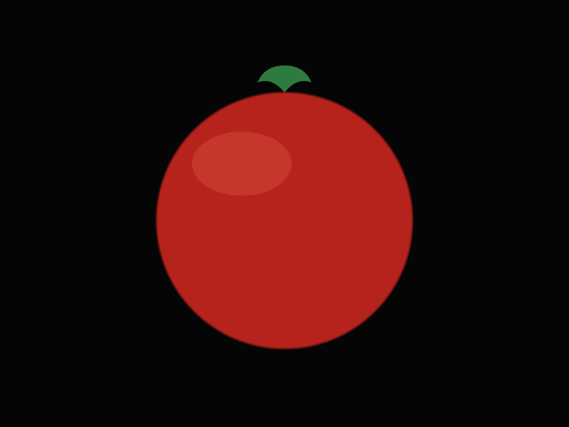

Runde Tomate (alemán)
Redondo Liso
Color fuerte y muy oscuro, cuello verde intenso, excelente color de viraje. Escala de color 1-13; se recolecta en grado 7-10. Buena uniformidad durante todo el ciclo, mantiene muy bien la calidad en las condiciones más difíciles del invierno. Sabor excelente, muy consistente, buena conservación.
| Firmeza | 2 kg/cm² |
|---|---|
| Calibre | GG, G, M, MM — 47 a 102 mm |
| Azúcares | 1.200–2.100 mg/100 g (media ~1.700) |
| Ácidos | 350–450 mg/100 g (media 400) |